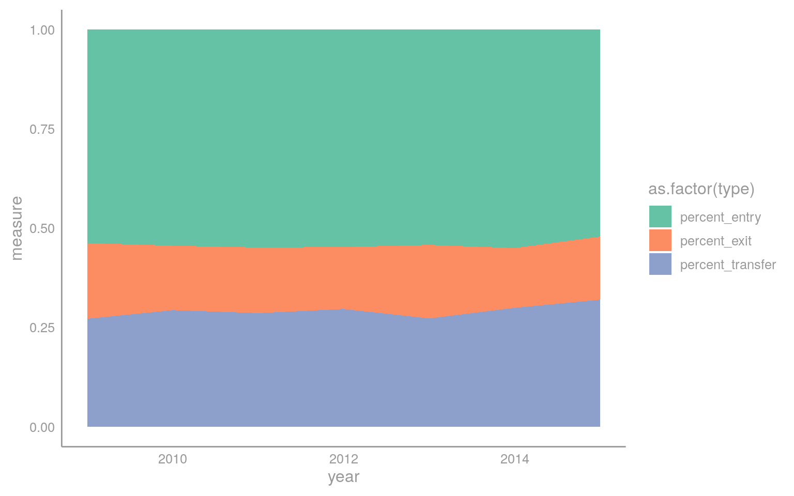
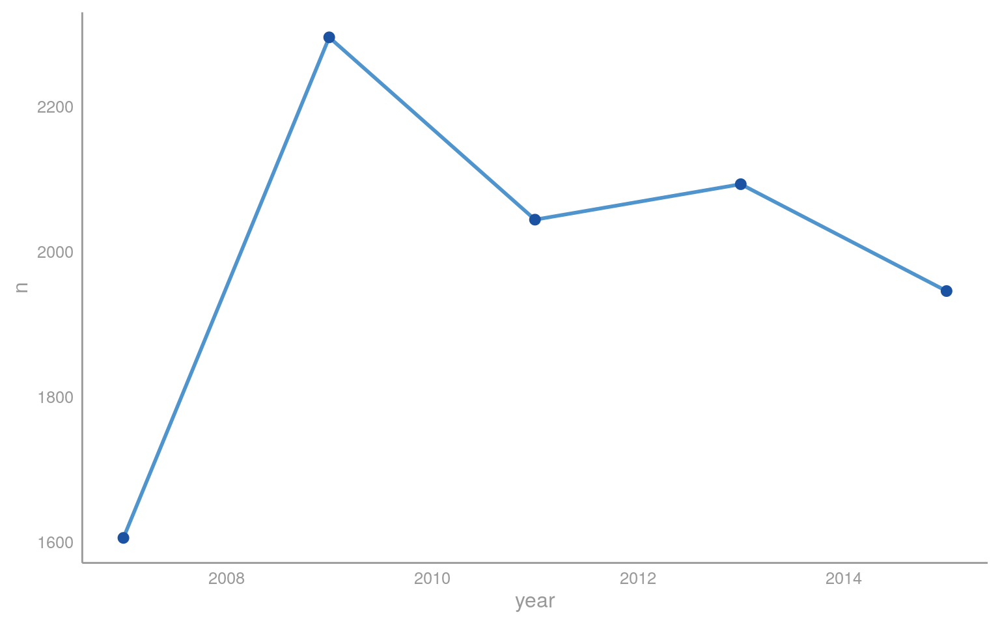
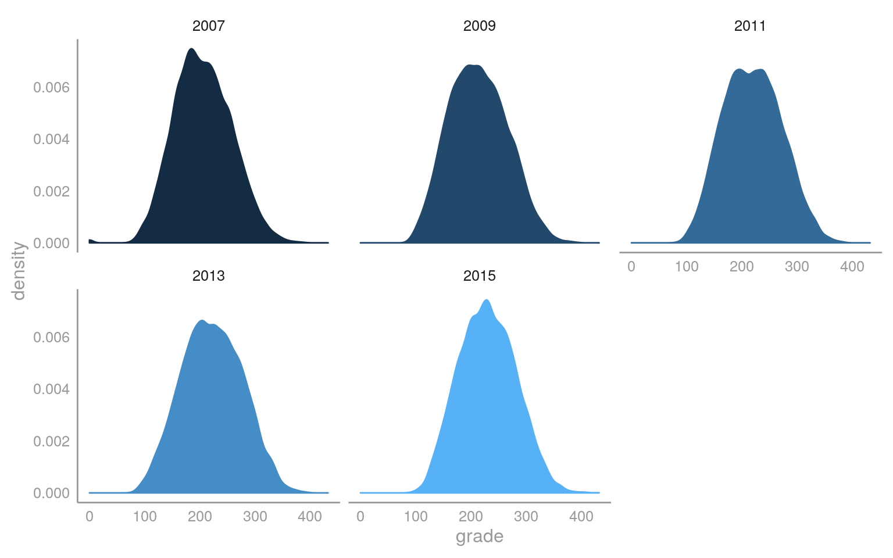

Chapter 5 Staff turnover
## OGR data source with driver: ESRI Shapefile
## Source: "/home/gali/princeton/dissertation/thesis/data/maps", layer: "municipio"
## with 5507 features
## It has 20 fieldsWhat explains variation in the quality of educational services? To answer this question, I leverage a set of
This chapter analyzes bureaucratic turnover and its downstream consequences for public education. I provide novel estimates of teacher turnover, disaggregated at the school level. This fine-grained panel, constructed from micro-level teacher data in Brazil, allows us to further segment turnover and identify hotspots in turnover with respect both to time and observable covariates. A salient feature of Brazilian public education is the inability of translate gains in per student expenditure and rising qualifications into educational gains.
I argue that large part of the loss in translation is political. The appointment or dismissal procedure of educational staff is under the exclusive jurisdiction of the local executive, encompassing both the mayor and the department of education (). However, these decisions are shaped not only by the executive. In my own fieldwork, I have identified how public sector jobs in education are subject to political pressure, an empirical regularity that has been confirmed in other studies.
This is not the first study to note the prevalence of political interests in shaping the educational bureaucracy in Brazil. In passing, a report organized by the Inep notes that a large proportion of educational administrative staff () are actively involved in local politics. Over two thirds have declared themselves to be affiliated to a political party
While ultimately I am interested in the political determinants of modifications in the bureaucratic structure and how they impinge on the quality of public education, the first step is to understand what factors explain variation in educational performance of students, a proxy for the quality of education at the local level. For each observed student test score, however, there is host of covariates associated with their performance: family background, school infrastructure, municipal sociodemographic characteristics, among others. Educational staff are only one of the factors determining the quality of education received by these students.
Data on educational staff characteristics comes from two sources: the school census and the Annual Report on Social Information (RAIS), a census of all formal municipal workers in Brazil. In the dataset, I can observe information on work experience, type of contract, age, education level and wages. Similar information is available for school principals. Municipal demographic data is collected from population census in two waves, 2000 and 2010. Because I also have micro-level census data, I am considering whether or not to retrieve information on the population sending their children to public education (available for both waves).
How prevalent is teacher turnover in schools? In fieldwork conducted in Ceará, as well as interviews with other scholars studying municipal education, it became apparent that teacher turnover is frequent and pervasive. School migration occurs as a result not of voluntary transfers by teachers, rather they are a product of political decisions made by city councilors to favor members of their constituency. These “spoils” have a potentially detrimental effect on student’s educational outcomes. This is the subject of inquiry of this chapter.
In our context, turnover is decomposed into a set of metrics. The relevant unit of analysis is the teacher \(i\) at a given school \(s\) at time \(t\). There are four possible scenarios:
- A teacher exits the municipal workforce the following year \(t+1\) (exit).
- A teacher stays in the municipal workforce, but is transferred to another school \(s_t \neq s_{t+1}\) (transfer).
- A teacher leaves the school because it is closed down (extinct).
- A new teacher enters the school (entry) \(s_{t-1} \neq s_{t}\).
These different types of turnover can have potentially damaging effects to the quality of eduation received by students. The channels are multiple. The direct effect is in the loss of established socioaffective ties between instructor and students, particularly in contexts where teachers are responsible for the instruction of several years.87

5.1 Descriptives
I first present some stylized facts on the municipal educational system in Brazil. In our sample, over two million children rely on municipally provided public education in Brazil.88

Student test scores are mandatory in Brazilian municipalities and are measured by administering a standardized exam across the territory. Student’s proficiency is estimated using Item-Response Theory (IRT), which is designed to estimate the latent, unobserved proficiency of students across two subjects: Portuguese and Math. Only schools with over ten students are included in the sample.

The Brazilian ministry of education performs block sampling by municipality. Only schools with over 10 students are included in the sampling.↩